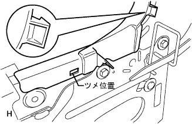
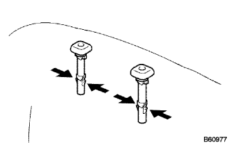
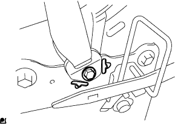
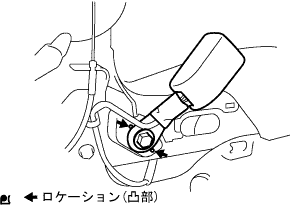
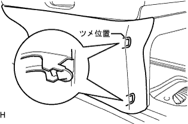
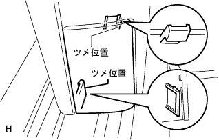

Front seat belt LH installation |
| 1. Front sheet outa belt assignment (retractor portion) |
 |
Attach the front sheet outa belt asy LH (retractor portion) with two bolts.
| 2. Installation of the front seat shoulder belt guide |
Pass the claw through the seat belt and attach the front seat sourd belt guide.
| 3. List seat belt Holder No.2 Installation |
Pass the claw through the seat belt and attach the No.2 rear seat Beltholder.
| 4. Long -seat cushion shield LWR LH installation |
 |
Pass the seat belt and attach the front seat cushion shield LWR LH.
| 5. Reclining adjuster inside cover RH mounting |
Make the claws and attach the reclining adjustment side cover RH.
Attach the screw.
| 6. Reclining adjuster inside cover LH installation |
|  |
Sub -seat lock control cable is used to match the claws and reclining agastain side cover LH is attached.
Attach the screw.
| 7. Front seat cushion cover & pad LH installation |
The front seat cushion cover & pad is used to the front seat cushion shield LWR LH.
The front seat cushion cover & pads will surely make the J hook on the front side.
 |
Turn the claw of the seat cushion frame LH.
| 8. Front seat backpad (cover tsuki) LH installation |
Use a hogling plier to attach the front seat cross cover & pad LH by hogling.
| 9. Front seat headrest support installation |
|  |
Attach 2 front seat headrest support to the seats.
| 10. List seat back rock bezel UPR installation |
Pass the seat belt and attach the front seat belt hole cover.
The claws of the rear seat back bezel UPR are used.
Attach two screws.
| 11. Front sheet outa belt assertion (Ancplate) |
|  |
Attach the front sheet outa belt ASSY LH (Ancplate) with one bolt.
| 12. Front-seat backboard SUB-ASSY LH installation |
Attach the cable through the seat belt.
Match the claws and attach the seat crossboard.
Raise the lever of the seat crossboard and attach the screw.
The lower side of the seat cross cover LH is used to the front seat crossboard.
| 13. Rear seat shoulder belt cover LH installation |
 |
Pass the seat belt and attach a rear seat shoulder belt cover LH.
| 14. Front seat cushion shield LH installation |
Make the claws of the cushion shield.
Attach the front seat cushion shield LH with a screw.

| 15. Reclining Adjustment Lelley Handle LH installation |
Match the claws and attach the reclining adjuster lary handle LH.
| 16. Long seat Innabelt Assigned Installation |
|  |
Attach the front sheet innabelt ASSY LH with a bolt.
Connect each connector, connect and fix the wire harness portion.
| 17. Front seat cushion shield Inn LH installation |
Make the claws of the cushion shield.
Attach the front seat cushion shield INN LH with a screw.

| 18. Front sheet headrest ASSY installation |
Attach the front seat headrest ASSY.
| 19. Long -seat ASSY LH installation |
Put the front sheet Assies on the vehicle and match the bolt holes.
Temporarily tighten with four bolts.
Tighten the bolt on the rear side in the order of inner → outa.
Tighten the bolt on the front side in the order of inner → outa.
| 20. Front sheet leg cover No.2 installation |
Attach the front seat leg cover No.2.
 |
Tighten the four screws.
| 21. Front sheet leg cover LH (LH seat yo) installation |
|  |
Make the claws and attach the front seat leg cover LH (LH seat yo).
| 22. Installation of front seat leg cover |
 |
Make the claws and attach the front seat leg cover.
| 23. Lon seat leg side cover cap installation |
|  |
Attach the front seat leg side cover cap.
| 24. Front sheet leg cover No.1 installation |
 |
Make the claws and attach the front seat leg cover No.1.
| 25. Seat belt function inspection |
Turn on the ignitsushi -si -tsuzuchi.
Sit in the front seat Assy LH and check that the assistant seat belt woninning lamp flashes when the tanging plate of the seat belt is not inserted in the buckle.
When the tanging plate of the seat belt is inserted in the buckle, check that the passenger seat Belt Warnin Grand Public Lamp turns off.